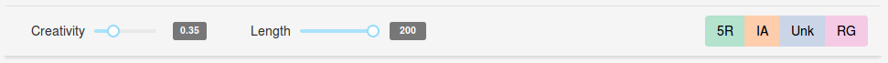
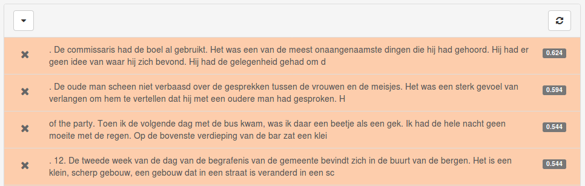
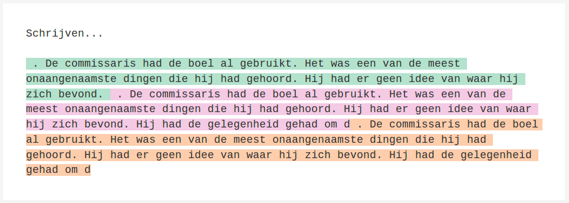

Inleiding
Deze pagina geeft een bescrhrijving en handleiding van AsiBot. Asibot is een web-applicatie waarmee schrijvers een interactie kunnen aangaan met een geavanceerd tekstgeneratie-systeem.
Aanmelden
Omdat AsiBot via het web wordt aangeboden, vragen we je om een account aan te maken via de registratie-pagina. Klik op de link 'registreer'.
Opzet van AsiBot
De interface van AsiBot is zo simpel mogelijk gehouden. Alle interactie met de applicatie vindt plaats op een enkele pagina met drie onderdelen: (1) een toolbar met een reeks knoppen om het tekstgeneratie-systeem aan te sturen, en (2) een panel waarin de tekstsuggesties van het systeem worden weergegeven, en (3) een tekst-editor. Hieronder bespreken we elk onderdeel in iets meer detail.
Generatie-toolbar

De generatie-toolbar geeft een aantal opties om het tekstgeneratie-systeem aan te sturen. De belangrijkste knoppen zijn de pastel-gekleurde knoppen aan de rechterkant, die elk tekst genereren in een bepaalde 'stijl'. Houd de muis op een van de knoppen om de volledige naam van de stijl te zien. Na het klikken op een van de knoppen, geeft het systeem een aantal tekstsuggesties in de gekozen stijl. Deze suggesties zijn aanklikbaar en worden toegevoegd aan de tekst op de plaats waar de cursor in het tekstvak staat. Naast de genereer-knoppen geeft de toolbar nog twee andere opties: een creativiteitsschuif en een lengteschuif. De lengteschuif controleert hoe lang de gegeneerde tekst zal zijn in aantal karakters. De creativiteitsschuif controleert hoe divers de gegenereerd tekst zal zijn. Lagere waardes zorgen voor conservatievere tekst; hogere voor creatievere tekst. Het is voor elk model wat zoeken naar een ideale waarde. De kans op ongrammaticale zinnen neemt toe met hogere waardes (maar soms worden wel erg leuke suggesties gedaan en worden zelfs nieuwe woorden bedacht). Lagere waardes kunnen soms wat eentonig aandoen, maar zijn vaak wel grammaticaal correct. Ideale waardes liggen vaak tussen 0.3 en 0.5, maar experimenteren is het beste advies.
Tekstsuggesties
Na het klikken op een van de generatie-knoppen, doet het systeem een aantal tekstsuggesties die onderaan de pagina worden weergegeven. 
- Elke generatie geeft drie nieuwe suggesties;
- Individuele suggesties kunnen bewaard worden of worden verwijderd. Pas op: als je de pagina ververst zijn de laatste (bewaarde) suggesties niet meer beschikbaar.
- Het suggestiepaneel kan gesloten worden met het pijltje aan de linkerkant.
Teksteditor
AsiBot implementeert een conventionele teksteditor waarmee gebruikelijke opmaak (zoals bold, cursief, etc) toegevoegd kan worden aan de tekst. Uniek aan de editor is dat er doormiddel van kleuren de herkomst van de tekst wordt bijgehouden.

De tekstkleuring werkt als volgt: - Elke aan de tekst toegevoegde tekstsuggestie krijgt een kleur die correspondeert met het model op basis waarvan die is gegenereerd. - Alle tekst, ook geneneerde, is aanpasbaar. Bij meer aanpassingen in gegeneerde tekst, zal de intensiteit van de kleur afnemen. Hieronder geven we nog enkele details over de tekstkleuring: - Originele gebruikerstekst wordt weergegeven zonder achtergrondkleur.
Opslaan
Maak je geen zorgen over het opslaan van de tekst: alle tekst (inclusief tekstkleuring) wordt voortdurend automatisch opgeslagen. De browser kan ook worden gesloten. Na het inloggen wordt de laatste save geladen.